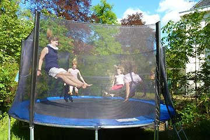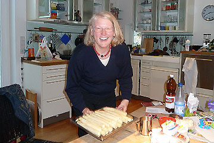
First of May is a big thing in Berlin and in particular in Kreuzberg with street parties and battles with the police. Many cars get burned and people told us better move Green Car to a safe place. On the way out of Berlin Green Car needed to charge. Hans, driving the car, found a rare accessible socket on a petrol-station. We charged for half an hour and made it to Hans' parents huge house in Potsdam. Three sisters and a cousin jumped trampolin in the garden. Walter and Christiane gave us a warm welcome and they took us for a very interesting tour of Potsdam - an old area of Russian houses and one of Dutch houses, castles and the Belvedere with a great view of green Berlin. On the way we bought fresh aspargus, which Christiane prepared for a delicious dinner we had around the big family table. Walter tested Green Car and was impressed - he would like an electric car next!
Nina
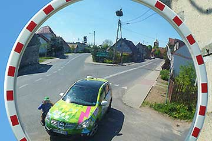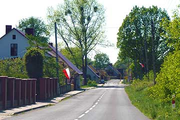
Poland now is a member of EU and the old border-station was empty and forlorn. In the little Polish town of Kostrzyn we needed to charge. We spotted an open car-repair-shop and the friendly people immediately gave us a place to connect. They closed early for Saturday, and we continued along the Oder-river on small roads passing lakes, swamps and flood-plains - and a village with storks. Near the border-crossing to Germany we stopped at a huge market in an old industrial area. Juras Auto Serwis was closed but had a socket outside. Thank you Juras! On the market we bought Russian champagne, beer from Tatra, Polish honey and ate German bratwurst. Then it was time to go home through spring-green forests with many memorials for the dead in WW2. After an interesting day in Poland we returned to Berlin, quite exhausted from spring and sun.
Nina
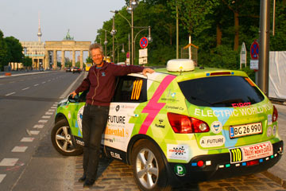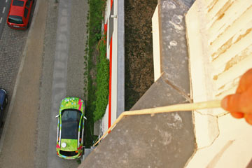
I, Green Car, almost got dizzy from all the flashes going off all around me. BEM, The German Association for Electric Mobility, had arranged a meeting with the press in front of their office. I saw Nina and Hjalte talk with a lot of journalists and people from the Berlin city administration. It was all very good, but why did they not give me a bath before I had to pose? Perhaps it was not so important after all because Bild, Germany's second largest net-media had me on their front page next day. You can find the article on this address:
http://www.bild.de/auto/auto-news/nissan-qashqai/weltumrundung-mit-elektroauto-17644512.bild.html
In the evening Nina and Hjalte went on a sightseeing drive through Berlin before they plugged me in from Ida and Hans' flat with the very long cable.
Greetings from Green Car
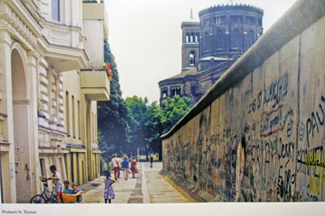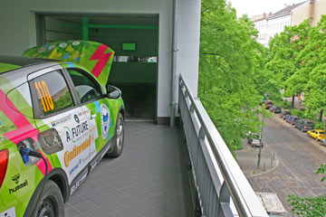
In a church we saw a picture of the house Ida and Hans live in. It was right next to the Wall. Now the Wall has gone and Berlin sparkles with ideas for the future. In Kreutzberg Green Car was testing a house with a lift so it could park inside the flat. The same day Hans took us to "Beta-haus" a sought-after office-community for start-ups. Here we talked with Christian Geiss from Daimler Benz in charge of the introduction of a car-share project in cities world-wide. In Amsterdam Daimler starts with electric Smart-cars: less co2 and less m2. And Daimler gets customers among young people that would not buy a car. Berlin has the history up close, but also room for the future and that makes the city so fascinating.
Hjalte
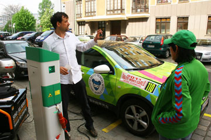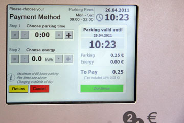
In Berlin they have a street called Wall Strasse. Now home for BEM, Bundesverband eMobilitat, an industry organisation a bit like the Danish Alliance for Electric Cars. The leader Frank Müller proudly showed us eight new charging-points put up along the street: Berlin's electric Wall Street! The only charging points we have met so far where you can pay some coins and get parking and power on the spot. Green Car was the first electric car to charge there and everybody went out from the office to take photos. Around the corner we were invited for a Libanese lunch. In the evening we forgot about the charging points and pulled our long cable from Ida and Hans' fifth floor apartment down to Green Car. That also worked.
Hjalte
 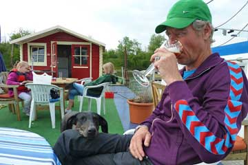
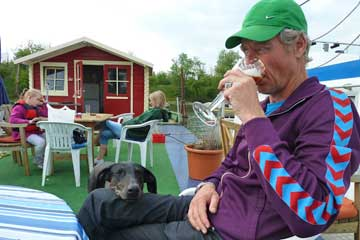
At Magdeburg in the former DDR we left the Autobahn to find power. The holiday made it hard. At the end we went down to a yacht-harbor by the Elbe. Long stairs led down to the piers and the power-outlets. Luckily outside a building we spotted an old forgotten socket still with 32 amps - just what Green Car could use. Nobody was around to ask, so we just hooked up and walked back to town. We chanced upon an open exhibition about the history of Magdeburg. Very well laid out and highly interesting and frightening too. The big town was completely destroyed in 1631 during the 30-years war and again in 1945. Still with many open spaces and a feeling of buildings lacking. When we returned to Green Car 4 hours later it was fully charged, and the harbor-master and his wife invited us for a beer down on the floating pier. When we reached Berlin Green Car had done around 300 km and still with 15% power left - enough to 30 km more.
Nina and Hjalte
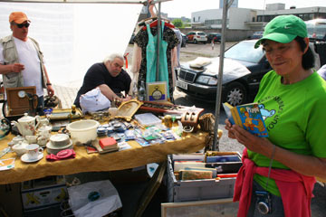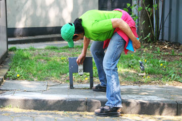
We said goodbye to Bernd and Patti and drove into the spring-green land. At market-place in Düsseldorf we looked around for power, but got a no. In small gardens people had hung painted easter-eggs in their trees. Finally we found an open glass-repair-shop a friendly manager offered us power for Green Car and coffee for us. The warm day ended at a camp-site where the permanent campers had a cosy time with TV, football and beer until midnight. In a small, dark cellar under an old swimming-pool we found a nice 16 amp socket for Green Car.
Nina
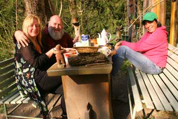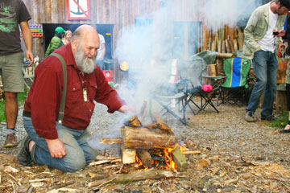
Green Car got a day of resting and we enjoyed the lovely weather outside the house. In the afternoon Bernd took us for a tour to the small villages in the Eifel. We saw the Rur-see, created by building a dam across the Rur-river and flooding several villages. We saw Vogelsang a place where Hitler had breed "arians" and a castle now uninhabited. In the meantime Patti had prepared an outdoor party with food and drink for all the neighbors that Bernd had invited. We decorated with all the flags collected on our world-tour and the Moto-Mundo banner. A journalist came from Aachen and made an interview with us. All evening we had a great time with the good people from the village Hammer. Bernd which next to his passion for motorcycle-travel books has a passion for the history of the Eifel, shares his vast knowlegde on his home-page www.hammer-eifel.de. See also www.berndtesch.de
Nina and Hjalte
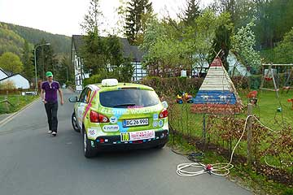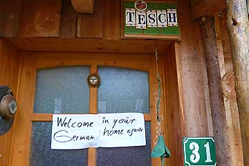
We wanted to reach Bernd Tesch and Patti near Aachen, so we got on the freeway from the morning and turned on some more watts. At lunch-time Hjalte drove up to a big DAF truck-dealer and asked for power, and got - again - a very friendly response. Green Car was charging for three hours at 380V in the big premises. Hjalte and I went for a 10 km walk in the warm summer to Weert . Later in the day we had a coffee-break at the central square in Maastricht. The rest of the way we went on very small roads. Green Car had done 300 km when we ran out of power and stopped! Luckily we were only 200 meters from Bernd, and a neighbor immediately came to our help with power. We walked through Hammer to Bernds house and half an hour later Green Car was moving again. Bernd and Patti had lighted a fire outside the house and we had a very lovely evening with with a lot of funny tales from the road.
Nina
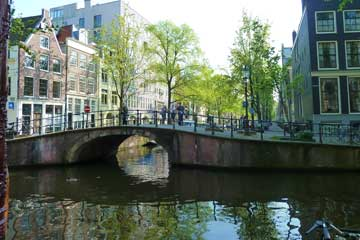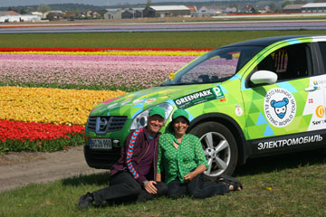
We drove to the town Lisse to see the blooming tulip fields, and we were soon overwhelmed by the bright colors and the smell of the many blooming bulb-plants. In front of us not only fields of tulips were blooming but also fields of hyacinths, lilies and daffodils. When we had had our lunch on the grass with a glorious view of the colorful fields we drove to the North Sea coast a few miles away. The weather was warm as a summer day and the wide beach was full of happy sun-bathers, even if the water was freezing cold. In the afternoon we returned to Amsterdam and saw the electric car parking spots near Nemo were all full! We parked Green Car next in line and went for a long walk along the canals - and came home to the camp-ground with a big bag of tulip-bulbs.
Nina